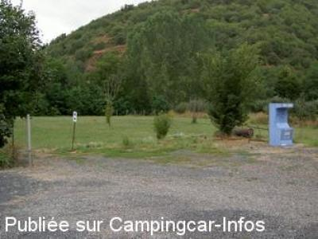

ASN = Aire de services avec stationnement nuit possible de :
BLESLE Le Babory
(N° 164)
Accès/adresse :
Le Babory D909
Aire de l'hôtel Le Scorpion
43450 BLESLE
Aire de l'hôtel Le Scorpion
43450 BLESLE
Latitude : (Nord) 45.31232° Décimaux ou 45° 18′ 44′′
Longitude : (Est) 3.18697° Décimaux ou 3° 11′ 13′′
Tarif : 2013
Stationnement, services : 12,50 €
Type de borne : FLOT BLEU
Services :


Tous commerces
Autres informations :
Ouvert toute l'année
20 emplacements éclairés et surveillés
Aire de service située derrière l'hôtel Fermée le mercredi dans la journée, ouverte après 17h
Tel : +33(0)471 762 898
lescorpion@wanadoo.fr
http://www.blesle.eu/fr/route.php

Le 26/08/2005 par jean-luc93
de
france six
le 23/08/2009 :
Borne Flot Bleu hors service (monnayeur en francs), pas d'affiche des tarifs.
Borne Flot Bleu hors service (monnayeur en francs), pas d'affiche des tarifs.
de
T TOURNAY
le 18/08/2008 :
Effectivement, nouvelle aire sur terrain gazonné et bien entretenue, mais 10€ la nuité. Un peu trop cher pour un emplacement de camping-car. 5€ serait plus raisonnable.
Effectivement, nouvelle aire sur terrain gazonné et bien entretenue, mais 10€ la nuité. Un peu trop cher pour un emplacement de camping-car. 5€ serait plus raisonnable.